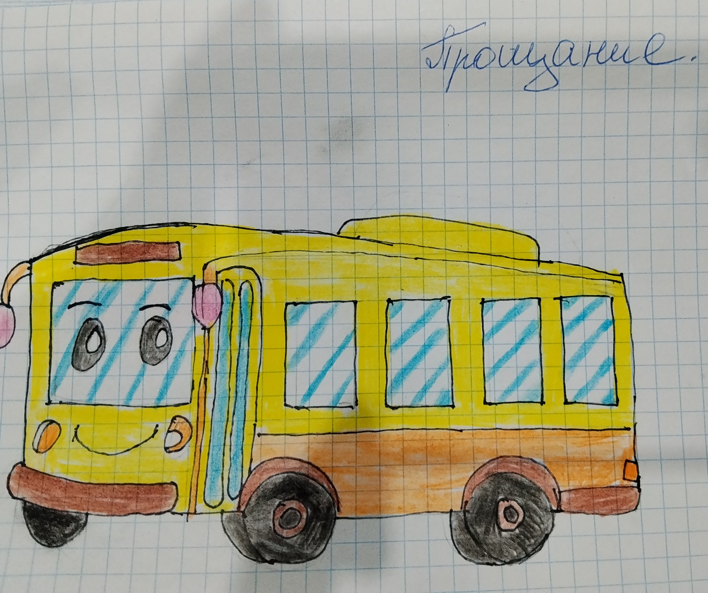

(Рисунок: Желтый автобус)

Вечером мы ужинали на террасе. Бабушка ставила на стол парное молоко и пирожки. Собаки лежали под столом, кошка сидела на окне. И было так тихо и хорошо, что я думала: вот бы это лето никогда не кончалось.
А когда пришло время уезжать, я плакала. Мне было так жалко расставаться с деревней! Там я бегала на улице целый день, с утра до вечера — и была счастлива. Ремка провожала меня до автобуса и смотрела вслед. Я махала ей рукой и обещала вернуться.